【死亡者数が交通事故の約4倍】ヒートショックから家族を守れ！【前編】
こんにちは、富山で自然素材にこだわるホンモノの家。フジ創アイノスです。 みなさんは 「ヒートショック」 という言葉はご存知ですか？ 「ヒートショック」急な温度差が原因で、 です。 ヒートショックによる死亡件数は、入浴中の
続きを読む →FUJISOU AINOS JOURNAL
家づくりのこと、暮らしのこと。
日々の想いを、お伝えします。
新しい記事から 36・40ページ
こんにちは、富山で自然素材にこだわるホンモノの家。フジ創アイノスです。 みなさんは 「ヒートショック」 という言葉はご存知ですか？ 「ヒートショック」急な温度差が原因で、 です。 ヒートショックによる死亡件数は、入浴中の
続きを読む →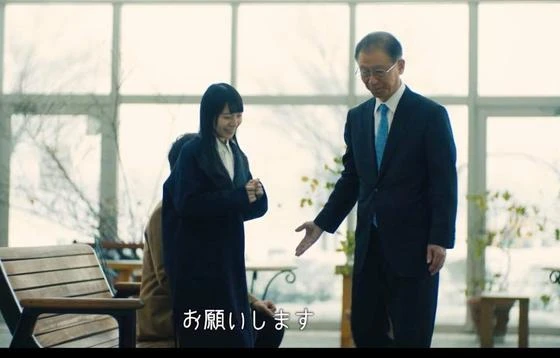
こんにちは、富山で自然素材にこだわるホンモノの家。フジ創アイノスです。 15-16は高岡市で『しっくい塗壁の心地よい家』完成見学会を開催しました。 「長持ちする家」「面倒な手入れのいらない家」を求めているご家族が来場者に
続きを読む →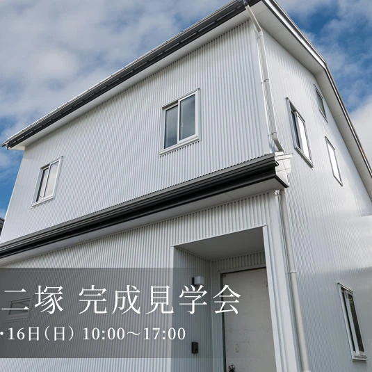
こんにちは、富山で自然素材にこだわるホンモノの家。フジ創アイノスです。 明日明後日に迫った『しっくい塗壁の心地よい家』二日間限定の完成見学会があります。 シンプルで飽きのこない外観のお家です。 外壁材のガルバリウム鋼板は
続きを読む →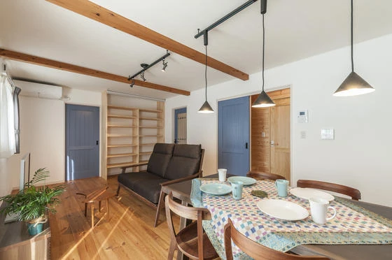
こんにちは、富山で自然素材にこだわるホンモノの家。フジ創アイノスです。 先日も見学会を開催し、参加者様には大変良い感触を頂きました(^^) 太陽光発電によるエコと北欧風のアンティークな内装、ガルバニウムを使った耐久性に富
続きを読む →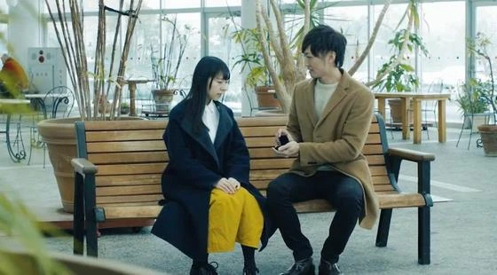
おはようございます。 富山で自然素材にこだわるホンモノの家。フジ創アイノスです。 本日『建国記念の日』祝日。フジ創アイノス営業しております。 この度の寒波で起きた「家の不都合」「冷暖房の物足りなさ」「断熱性への不安」..
続きを読む →
こんにちは、富山で自然素材にこだわるホンモノの家。フジ創アイノスです。 先月２５日に開催した 「家づくりでは絶対にやってはいけない１０のコト」 好評につき、 SIMPLE NOTE さんと、 次回の予定 を決める会議が進
続きを読む →
こんにちは、富山で自然素材にこだわるホンモノの家。フジ創アイノスです。 家を建てることの大きな目標として、住む人が健康になり、 末永く暮らし続けることが挙げられます。だからこそ安全で安心な家を 誰もが求めています。 He
続きを読む →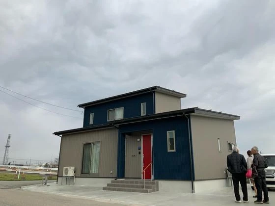
こんにちは、富山で自然素材にこだわるホンモノの家。フジ創アイノスです。 先日はご夫婦向けの住宅のお引渡し式でした。 将来を見据えたスマートなアイデアが詰まったおうち、 よく使う場所が広々 として バリアフリー を意識した
続きを読む →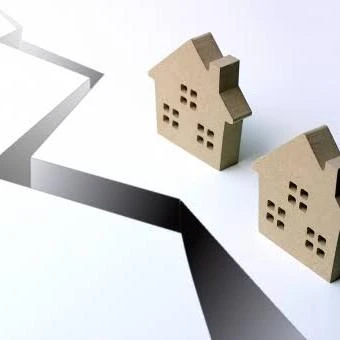
こんにちは、富山で自然素材にこだわるホンモノの家。フジ創アイノスです。 実は近年、木から生まれた最新技術があります。 木の強さの成分であるセルロースからつくられた新素材は、 鉄の5分の１の軽さで、強度は鋼鉄の５倍あります
続きを読む →こんにちは、富山で自然素材にこだわるホンモノの家。フジ創アイノスです。 日本には八百万の神がいて、万民を見守ってくれているという思想が根付いています。 だからこそ、様々な自然の恵みに対しても感謝の念を忘れません。 家を建
続きを読む →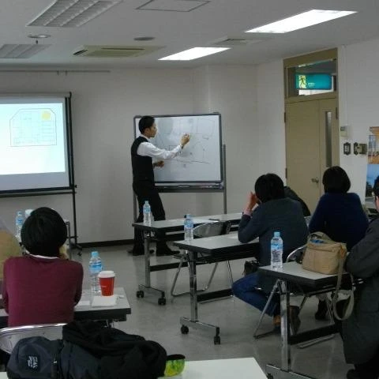
こんにちは、富山で自然素材にこだわるホンモノの家。フジ創アイノスです。 全国で１０００組の家族が参加した大人気セミナー 『家づくりで絶対にやってはいけない１０のコト』 を高岡市地場産業センターで開催しました。 最近巷では
続きを読む →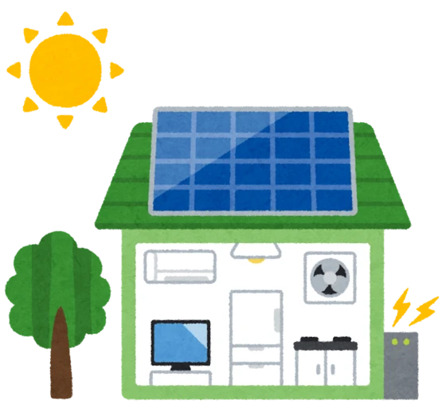
こんにちは、富山で自然素材にこだわるホンモノの家。フジ創アイノスです。 老後資金2000万円を用意する方法。家を買うと貯蓄ができるようになる理由の一つとして 「太陽光発電の装着で毎月光熱費がいらなくなり、さらに売電収入が
続きを読む →こんにちは、富山で自然素材にこだわるホンモノの家。フジ創アイノスです。 最近のカフェ、若い人がよく勉強している風景に出会います。 八号線沿いではコメダさんや高倉さん、マックさん 富山駅近辺ではドトールさん、スタバさん、太
続きを読む →こんにちは、富山で自然素材にこだわるホンモノの家。フジ創アイノスです。 例えば鉄と木の棒が同じくらいの重さの棒で考えてみることにしましょう。 木や鉄にも種類がありますので、まずは一般的な鉄とスギで比べてみます。 それぞれ
続きを読む →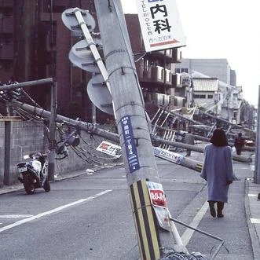
こんにちは、富山で自然素材にこだわるホンモノの家。フジ創アイノスです。 阪神淡路大震災から25年が経ちました。25年前の 午前5時46分。 高架が横たわり沢山の家屋が崩壊し人が無くなる... 大都会で起きた今でも日本中の
続きを読む →
こんにちは、富山で自然素材にこだわるホンモノの家。フジ創アイノスです。 １月２５日に開催予定 「家づくりでは絶対にやってはいけない１０のコト」 の準備がすすんでいます。 先日フジ創にのぼり旗が届き、組み立てました。協力業
続きを読む →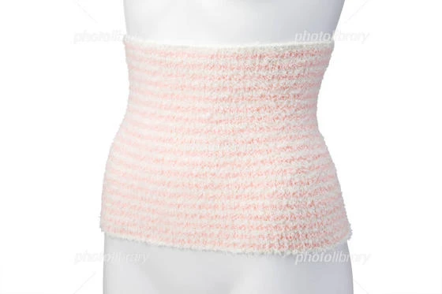
こんにちは、富山で自然素材にこだわるホンモノの家。フジ創アイノスです。 日本人が考えだした身体を温める知恵は、先の腹巻のほかに風呂もあります。 シャワーを浴びるよりも、温かいあ湯の中にしっかりとつかり 身体を温める習慣が
続きを読む →こんにちは、富山で自然素材にこだわるホンモノの家。フジ創アイノスです。 英語で風邪をひくことを「catsh a cold」といいます。 そして風邪の対策に、生姜やネギが良いと言われるのも、これらの食材が 身体を温める効果
続きを読む →こんにちは、富山で自然素材にこだわるホンモノの家。フジ創アイノスです。 健康を維持する住まいとはどのようなものでしょうか。 明確な答えがあれば楽ですが、健康法も数えきれないほどあり、答えを見つけるのは簡単ではありません。
続きを読む →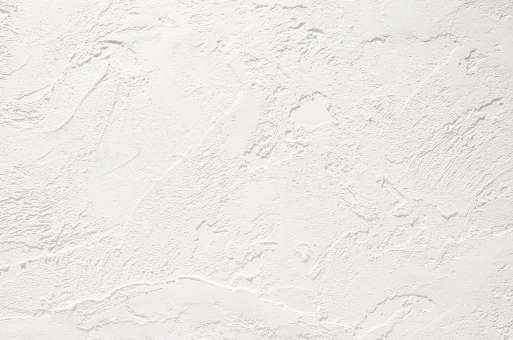
こんにちは、富山で自然素材にこだわるホンモノの家。フジ創アイノスです。 シックハウスとしてのアレルギーのことを考えるのは単純なことではありません。 ホルムアルデヒドも扱っていても症状が出ない人もいます。つまり個人によって
続きを読む →
こんにちは、富山で自然素材にこだわるホンモノの家。フジ創アイノスです。 考えてみると、親戚って不思議な関係ですね。家族じゃないけど、他人ではない。 友人でもない。師弟関係でもない。ご近所さんでもない。 なのにとても親密で
続きを読む →新年、明けましておめでとうございます。 富山で自然素材にこだわるホンモノの家「フジ創アイノス」です。 旧年中は、多大なるご尽力をいただき、誠にありがとうございます。 2020年も、より一層のご支援、お引立てを賜りますよう
続きを読む →
こんにちは、富山で自然素材にこだわるホンモノの家「フジ創アイノス」です。 今年は大変お世話になりました。来年も皆様に有益な情報や 住宅づくりに興味をもっていただけるような内容を投稿していきたいと思います。 １月に開催予定
続きを読む →
こんにちは、富山で自然素材にこだわるホンモノの家。フジ創アイノスです。 高岡市内免4丁目の生活利便性の良い住宅街に、家族の暮らし方を考えたモデルハウス2棟の同時販売を開始しました。 自然素材の風合いを生かしたナチュラルテ
続きを読む →